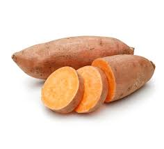

Roasted Sweet Potatoes
(Great Dinner Side Dish)

2 hand sized sweet potatoes
2 TBS neutral tasking oil
Salt
Pepper
Chili powder
- Preheat oven to 425 degrees
- Thoroughly wash the sweet potatoes, we're leaving the skins on so make sure they're clean
- Slice sweet potatoes into rounds 1/4 inch thick
- Coat all of the slices in oil and lay them out on baking sheets. The edges can touch but don't overlap them
- Sprinle with salt, pepper, and chili powder to your liking
- Bake for 10 minutes, flip, and bake 15 more minutes, or until they've reached your desired level of crispiness.